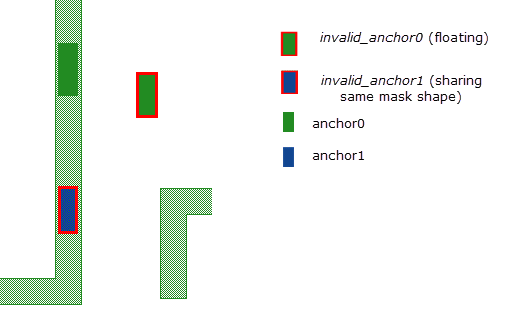
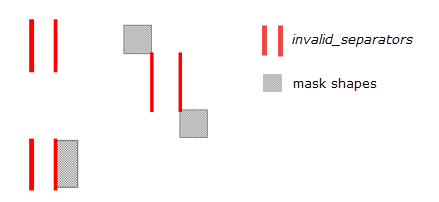
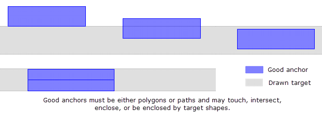

DFM MP
Multi-Patterning SVRF Commands
Invokes Calibre triple- or quadruple-patterning. Splits the target layer into three or four masks and generates error layers.
Usage
output_layer = DFM MP {3 | 4}
operation_keyword
target_layer
separator_layer [‘(’{SAME | OPPOSITE} [priority]‘)’] ...
anchor_layer ‘(’ANCHOR {MASK1 | MASK2 | MASK3 | MASK4}‘)’...
stitch_layer ‘(’STITCH
REQUIRED | USER | MINIMIZE priority | MAXIMIZE priority}‘)’ ...
Arguments
- output_layer
A required output layer that can be saved to the output database and used for final decomposed mask output or error visualization analysis.
- 3 | 4
A required parameter that declares the number of masks that DFM MP must process. You specify 3 for triple-patterning and 4 for quadruple-patterning.
- operation_keyword
Any of the following required keywords directing DFM MP to perform its stated operation. You must specify at least one operation_keyword per DFM MP command. Subsequent operation_keyword keywords are specified on subsequent DFM MP commands. operation_keyword keywords are classified in three keyword groups, Mask Output, Error Visualization and Graph Reduction.
Mask Output Keywords
MASK1 — A required keyword that outputs a layer containing MASK1 geometries.
MASK2 — A required keyword that outputs a layer containing MASK2 geometries.
MASK3 — A required keyword that outputs a layer containing MASK3 geometries.
MASK4 — A required keyword that outputs a layer containing MASK4 geometries. Only used for DFM MP 4.
Error Visualization Keywords
For error visualization output, the output type may be one of the following keywords, each specified on a separate DFM MP command line. For more information regarding error visualization and the implementation of these keywords, see the section entitled “MP Visualization and Error Resolution”.
ANCHOR_SELF_CONFLICT_POLYGONS — Outputs a layer containing a subset of the conflict layer containing any single target shape with a color conflict between anchors on that shape. This error occurs when a single shape is anchored for multiple masks such as MASK1 through MASKn. This is a type-1 layer.
CONFLICT — Outputs a layer containing all target geometries in violation with any visualization error. The layer is formed by coloring violations (where two polygons are on the same mask, therefore forcing a separator between them), then expands from these components to all polygons with connected separators. It stops expanding at anchors or edges that are removed by reduction. This is a type-1 layer.
DIRECT_ANCHOR_CONFLICT_SEPARATORS — Outputs a layer containing separators between two polygons that are both anchored to the same mask. This is a type-3 layer.
EQUIV_LOOP_COMBINED — Outputs a layer containing merged polygons and edge separators of an equivalence loop where two polygons have a forced equivalence path and a separator between them. This visualization keyword is only available for a mask number of 3. This is a type-1 layer.
EQUIV_LOOP_POLYGONS — Outputs a layer containing all the polygons of an equivalence loop. An equivalence loop violation is defined as two polygons having a forced equivalence path and a separator between them. This visualization keyword is only available for a mask number of 3. This is a type-1 layer.
EQUIV_LOOP_EQUIV_POLYGONS — Outputs a layer containing only those polygons of an equivalence loop that have a forced equivalence. An equivalence loop violation is defined as two polygons having a forced equivalence path and a separator between them. This visualization keyword is only available for a mask number of 3. This is a type-1 layer.
EQUIV_LOOP_SEPARATORS — Outputs a layer containing all separators of an equivalence loop. An equivalence loop violation is defined as two polygons having a forced equivalence path and a separator between them. This visualization keyword is only available for a mask number of 3. This is a type-3 layer.
EQUIV_LOOP_VIOLATION_SEPARATORS — Outputs a layer containing the violation separators of an equivalence loop. An equivalence loop violation is defined as two polygons having a forced equivalence path and a separator between them. This visualization keyword is only available for a mask number of 3. This is a type-3 layer.
INVALID_ANCHORn — Outputs a layer containing all invalid anchors assigned to maskn, where n must be less than or equal to the mask count. This is a type-1 layer. Invalid anchors may be categorized in the following ways:
Anchors not interacting with any target shapes
Anchors of different masks interacting with the same target shape
An example output of INVALID_ANCHOR error layer output:
INVALID_SEPARATORS — Outputs a layer containing invalid separators from required or optional input separator layers. Each edge of a valid separator edge pair must touch exactly one target shape. This is a type-3 layer. Invalid separators include:
Separators not interacting with any target shapes.
Separators interacting with more than two target shapes, or have an edge that interacts with more than one target shape.
Separators having one edge not interacting with a target shape.
Separators with one, three, or four edges, or that have a trivial edge.
Separators touching a number of target shapes greater than or equal to the mask count after stitches are removed.
Separators having one or more edges not interacting with a target shape after user stitches are removed.
Example separators include:
INVALID_STITCHES — Outputs a layer containing invalid stitches (either required or optional) that are derived from any separator layer. Each stitch must cut a target shape in exactly two polygons (where the stitch touches only two shapes). For examples of good and bad stitches, see Figure 6. This is a type-1 layer. Invalid stitches include:
Stitches that touch or overlap other stitches from different stitch layers.
Stitches that touch or overlap anchors.
Stitches that extend outside or are entirely outside a target shape.
Stitches that do not split a target shape into two separate parts after stitch removal.
Non-user stitches that touch one or more separators.
Stitches specified as REQUIRED or MAXIMIZE 0 that split a target shape into a number of shapes exceeding the mask count after stitches are removed.
Stitches specified as REQUIRED or MAXIMIZE 0 that split a target shape into a number of shapes equal to or greater than the mask count, that also touch one or more required separators, after stitches are removed.
OPPOSITE_ANCHOR_EQUIV_POLYGONS — Outputs a layer containing polygons that must be on the same mask within an opposite-anchor path. This visualization keyword is only available for a mask number of 3. This is a type-1 layer.
OPPOSITE_ANCHOR_COMBINED — Outputs a layer containing merged polygons and separators within an opposite-anchor path. This visualization keyword is only available for a mask number of 3. This is a type-1 layer.
OPPOSITE_ANCHOR_POLYGONS — Outputs a layer containing polygons within an opposite-anchor path. This visualization keyword is only available for a mask number of 3. This is a type-1 layer.
OPPOSITE_ANCHOR_SEPARATORS — Outputs a layer containing separators within an opposite-anchor path. This visualization keyword is only available for a mask number of 3. This is a type-3 layer.
REDUCED_SEPARATORS CLUSTER — Outputs a layer containing all remaining edges after reductions have been performed. This is a type 3 layer.
REDUCED_TARGET — Outputs a layer containing all target geometries remaining after reductions have been performed. This is a type 1 layer.
REDUCED_TARGET_POLYGONS — Outputs a layer containing all target geometries remaining after reductions have been performed. This is a type-1 layer.
REDUCED_TARGET_SEPARATORS — Outputs a layer containing all remaining edges after reductions have been performed. Each edge pair contains a property identifying which component it belongs to. If an edge pair belongs to multiple components, it is duplicated and each edge pair is given a unique component ID. This is a type-3 layer.
REMAINING_VIOLATIONS_COMBINED — Outputs a layer containing merged polygons and separators belonging to components from the CONFLICT layer which have no violations associated with them. This is a type-1 layer.
REMAINING_VIOLATIONS_POLYGONS — Outputs a layer containing polygons belonging to components from the CONFLICT layer which have no violations associated with them. This is a type-1 layer.
REMAINING_VIOLATIONS_SEPARATORS — Outputs a layer containing separators belonging to components from the CONFLICT layer which have no violations associated with them. This is a type-3 layer.
SAME_ANCHOR_COMBINED — Outputs a layer containing merged polygons, anchors and violation separators of a same-anchor path. A same-anchor violation is defined as two polygons anchored to the same mask and separated by equivalences and one additional separator. This visualization keyword is only available for a mask number of 3. This is a type-1 layer.
SAME_ANCHOR_EQUIV_POLYGONS — Outputs a layer containing polygons that must be on the same layer within a same-anchor path. A same-anchor violation is defined as two polygons anchored to the same mask and separated by equivalences and one additional separator. This visualization keyword is only available for a mask number of 3. This is a type-1 layer.
SAME_ANCHOR_POLYGONS — Outputs a layer containing polygons of a same-anchor path. A same-anchor violation is defined as two polygons anchored to the same mask and separated by equivalences and one additional separator. This visualization keyword is only available for a mask number of 3. This is a type-1 layer.
SAME_ANCHOR_SEPARATORS — Outputs a layer containing separators of the same-anchor path. A same-anchor violation is defined as two polygons anchored to the same mask and separated by equivalences and one additional separator. This visualization keyword is only available for a mask number of 3. This is a type-3 layer.
SAME_ANCHOR_VIOLATION_SEPARATORS — Outputs a layer containing separators participating in a same-anchor path violation (those found by SAME_ANCHOR_POLYGONS) but are not part of the equivalence path (each same-anchor path violation contains exactly one separator in the equivalence path). This visualization keyword is only available for a mask number of 3. This is a type-3 layer.
SELF_CONFLICT_SEPARATORS — Outputs a layer containing the edges of separators marking a violation from one side of a polygon to another side of the same polygon. This is a type-3 layer.
SELF_CONTAINED_VIOLATION_POLYGONS — Outputs a layer containing polygons that form simple, self-contained structures that are inherently uncolorable. In triple-patterning, these structures are even wheels (wheel graphs with an even number of nodes) and K4s (four shapes that each have a separator touching the other three shapes). In quadruple-patterning, these structures are K5s (five shapes that each have a separator touching the other four shapes). This output is a type-1 layer.
SELF_CONTAINED_VIOLATION_SEPARATORS — Outputs a layer containing separators that form simple, self-contained structures that are inherently uncolorable. In triple-patterning, these structures are even wheels (wheel graphs with an even number of nodes) and K4s (four shapes that each have a separator touching the other three shapes). In quadruple-patterning, these structures are K5s (five shapes that each have a separator touching the other four shapes). This output is a type-3 layer.
SELF_CONTAINED_VIOLATION_COMBINED — Outputs a layer containing merged polygons and separators that form simple, self-contained structures that are inherently uncolorable. In triple-patterning, these structures are even wheels (wheel graphs with an even number of nodes) and K4s (four shapes that each have a separator touching the other three shapes). In quadruple-patterning, these structures are K5s (five shapes that each have a separator touching the other four shapes). This output is a type-1 layer.
VIOLATED_OPTIONAL_SEPARATORS — Outputs a layer containing optional violated separators (those with a priority index greater than 0, a lower priority). Separators specifying the OPPOSITE keyword (see page separator_layer [‘(’SAME | OPPOSITE [priority]‘)’]...) are considered violated if they are formed between two polygons assigned to the same mask, or if both ends of the separator touch the same polygon. Separators specifying the SAME keyword are considered violated if they are formed between two polygons with different mask assignments. Anchor- and self-conflicts formed by optional separators are included in this output. This output is a type-3 layer.
VIOLATED_OPTIONAL_STITCHES — Outputs a layer containing optional violated MINIMIZE and MAXIMIZE stitches (those with a priority index greater than 0, a lower priority). A MINIMIZE stitch is considered violated when used and a MAXIMIZE stitch is considered violated when not used. This output is a type-1 layer.
VIOLATED_SEPARATORS — Outputs a layer containing required violated separators (those with a priority index less than or equal to 0, a higher priority). Errors generated by DIRECT_ANCHOR_CONFLICT_SEPARATORS or SELF_CONFLICT_SEPARATORS are not included in this output. This output applies only to required separators. This output is a type-3 layer.
VIOLATED_STITCHES — Outputs a layer containing polygons of stitches specified with the REQUIRED argument of the stitch_layer keyword that are in violation. This output is a type-1 layer.
Graph Reduction Keyword
For graph reduction, the output type may be this keyword, specified on its own DFM MP command line:
REDUCED_SEPARATORS_LDR — Reports the edges remaining in the graph after Low Degree Node Removal is performed. This is a type-3 layer.
- target_layer
A required argument specifying the layer to be decomposed. The target_layer must be a polygon layer.
- separator_layer [‘(’SAME | OPPOSITE [priority]‘)’]...
A required argument specifying a separator_layer. If no separator_layer is specified, you must specify an anchor_layer or stitch_layer. The separator layer must be an edge pair (layer type-3). One or more separator layers may be specified. The SAME keyword indicates the polygons associated with the separator can both be assigned to the same mask layer. The keyword OPPOSITE indicates the polygons associated with the separator must be assigned to different mask layers. If no parentheses are specified, the separator behavior defaults to OPPOSITE with a priority of 0.
Separators can be specified as either required or optional during processing through the use of priority. The higher the priority value, the lower the priority of the separator. The priority value can be either 0 or a positive number. The default priority value is 0. A separator with the default priority of 0 enforces a required separator of highest priority. A separator specified with a priority of 1 (or greater) is considered lower priority.
Note:Where any user-defined separators are invalid, all output layers, with the exception of the invalid separators layer, are potentially incorrect or inconsistent. In this specific case, Siemens EDA makes no guarantee these separators are correctly evaluated between connected polygons.
Example 1 shows SVRF code that provides typical separator derivation, and Figure 1 shows correctly formed separators.
Example 1. Typical Separator Derivationm1_tip = CONVEX EDGE m1 ANGLE1 == 90 LENGTH1 >= 0.03 ANGLE2 == 90 LENGTH2 >= 0.03 WITH LENGTH <= 0.06 m1_side = m1 NOT COIN EDGE m1_tipm1_S2S = EXT m1_side < 0.06 OPPOSITE PARALLEL ONLY PROJ > 0 m1_T2S = EXT m1_tip m1_side < 0.065 PARALLEL ONLY m1_T2T = EXT m1_tip < 0.085 PARALLEL ONLYThe input separator layer must consist of edge pairs only (layer type-3) and each separator of the edge pair must touch exactly one drawn shape. Figure 1 demonstrates both edge- and tie-based separators. Combination polygon-separator error keywords always output tie-based separators.
Figure 1. Correct DFM MP Separators
- anchor_layer ‘(’ANCHOR {MASK1 | MASK2 | MASK3 | MASK4}‘)’ ...
A required argument specifying one or more anchor_layers. If no anchor_layer is specified, you must specify a separator_layer or stitch_layer. Anchor layers must comprise either polygons or paths (layer types 1 or 2, respectively). You may specify as many anchor_layers as allowed by the specified mask number, either 3 or 4; you cannot specify an anchor layer for a mask whose number is larger than the mask count.
Anchor layers are identified by the keyword ANCHOR specified inside the parentheses. If no parentheses are specified, the argument is interpreted as a separator layer. Mask values for anchor layer are identified by the keywords MASK1, MASK2, MASK3, and MASK4 (for quadruple patterning only) specified within the parentheses.
Figure 2 demonstrates correct and incorrectly drawn anchors.
Figure 2. Good and Bad Anchors
- stitch_layer ‘(’STITCH {MAXIMIZE priority | MINIMIZE priority | REQUIRED | USER}‘)’...
A required argument specifying one or more stitch_layers. If no stitch_layer is specified, you must specify a separator_layer or anchor_layer. Each of the stitch layers specified must be a polygon (layer type-1). The entirety of the stitch must be contained within the target shape and coincident with any target shape edge. A stitch is processed to result like a separator; after the stitch is subtracted from the drawn layer, the remaining space between target shapes determines whether the stitch is valid. Stitches that do not separate a target shape into at least two polygons are considered invalid; every stitch shape must touch at least two target shapes, not exceeding the number of masks. Stitches not touching any target shapes, those that touch other stitches, and those that touch anchors are invalid. A stitch that touches a separator is converted into multiple separators, one for each of the polygons resulting from the stitch removal.
Regarding non-user stitches, DFM MP allows non-user stitches to touch separators where the mask count is greater than 2. In this case, non-user stitches touching separators are converted into multiple separators, one for each polygon resulting from removing the stitch.
For example, if a separator exists between drawn target shapes A and B, and that separator touches a stitch on polygon A, and removing that stitch breaks A into three distinct polygons, A1, A2, and A3, then the following separators are formed:
A1 — B, A2 — B, A3 — B
If a stitch also splits shape B into two distinct polygons, B1 and B2, and the same separator touches that stitch, then the following separators are formed:
A1 — B1, A1 — B2, A2 — B1, A2 — B2, A3 — B1, A3 — B2
MAXIMIZE priority
Specified with a priority of 0, MAXIMIZE forces all stitches to be implemented. MAXIMIZE 0 is equivalent to REQUIRED. The higher the priority value, the lower the relative stitch priority. Enforced stitch priority is determined relative to priorities assigned to neighboring stitch_layers, and coloring constraints of separator_layers by their respective priorities.
MINIMIZE priority
Minimizes the number of stitches implemented by DFM MP. Minimizing stitch usage cannot be made mandatory, therefore MINIMIZE must specify a priority greater than 0.
REQUIRED
Implements all stitches, and any stitch which cannot be used (due to excessive coloring constraints) is reported by the VIOLATED_STITCHES error layer.
USER
Uses user-defined separator_layers to enforce coloring constraints between opposite sides of stitched polygons. User stitches must be user-generated and provided to DFM MP as an input separator layer. User‑defined separators provide these capabilities and differences between non-user stitches:
Enabling opposite-color mask constraints between two sides of a stitch, making that stitch required.
Providing an optional, same-color mask constraint between two sides of a stitch minimizing its use.
Separators are not generated between pairs of resulting user stitches.
Separators touching user stitches are not converted into multiple separators.
Note:Where any user-defined separators are invalid, all output layers, with the exception of the invalid separators layer, are potentially incorrect or inconsistent. In this specific case, Siemens EDA makes no guarantee these separators are correctly evaluated between connected polygons.
Figure 3 demonstrates differences between correct and incorrectly drawn stitches.
Figure 3. Good and Bad Multi-Patterning User Stitches
Description
Performs coloring for triple- and quadruple-patterning designs. Outputs all decomposed, colored mask layers and their associated error and analysis layers. Each DFM MP command must specify at least one layer referencing a separator, anchor, or stitch, and may specify any combination, in any order, and any number of the three layers. For important exceptions regarding layer derivation support see “Guidelines for Deriving Good Separator and Action Layers”.
Examples
Example 1 - Mask Output
CA_Mask1_Out = DFM MP 3 MASK1 CA_Uncolored SEP.S2S SEP.T2T
CA_Mask1(anchor mask1) CA_Mask2(anchor mask2) CA_Mask3(anchor mask3)CA_Mask2_Out = DFM MP 3 MASK2 CA_Uncolored SEP.S2S SEP.T2T
CA_Mask1(anchor mask1) CA_Mask2(anchor mask2) CA_Mask3(anchor mask3)CA_Mask3_Out = DFM MP 3 MASK3 CA_Uncolored SEP.S2S SEP.T2T
CA_Mask1(anchor mask1) CA_Mask2(anchor mask2) CA_Mask3(anchor mask3)CA_Mask1_Out {COPY CA_Mask1_Out} DRC CHECK MAP CA_Mask1_Out 15
CA_Mask2_Out {COPY CA_Mask2_Out} DRC CHECK MAP CA_Mask2_Out 16
CA_Mask3_Out {COPY CA_Mask3_Out} DRC CHECK MAP CA_Mask3_Out 17Example 2 - Modifiers for Separators
// If separator type is not specified, default is opposite 0DFM MP 3 MASK1 CA_Uncolored SEP.S2S(opposite 0) SEP.T2T(opposite 0)
CA_Mask1(anchor mask1) CA_Mask2(anchor mask2) CA_Mask3(anchor mask3)DFM MP 3 MASK1 CA_Uncolored SEP.S2S(opposite 0) SEP.T2T(opposite 0)
CA_Mask1(anchor mask1) CA_Mask2(anchor mask2) CA_Mask3(anchor mask3)Example 3 - Debugging and Analysis Layer Output
DFM MP 3 CONFLICT CA_Uncolored SEP.S2S(opposite 0)
SEP.T2T(opposite 0) CA_Mask1(anchor mask1) CA_Mask2(anchor mask2)
CA_Mask3(anchor mask3)